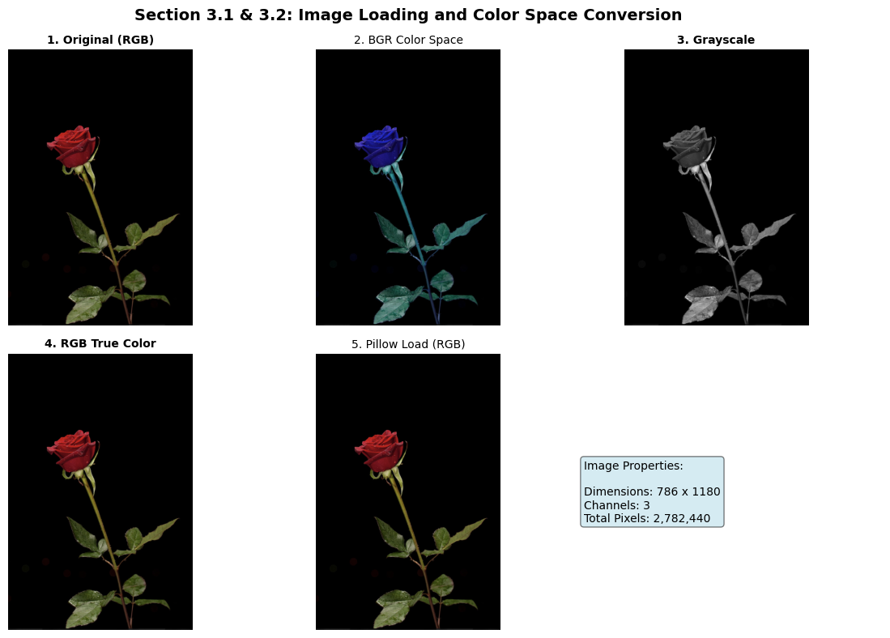
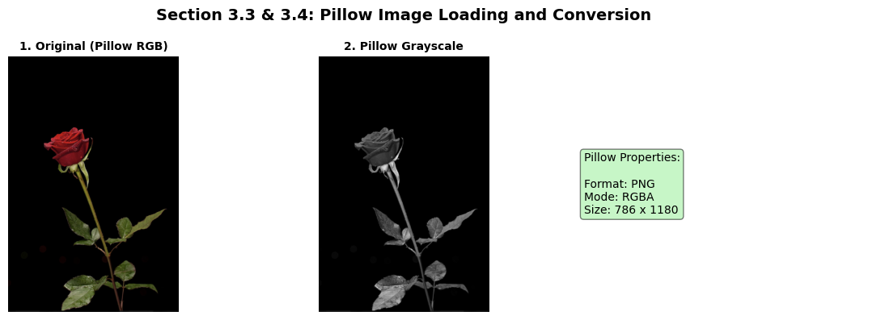
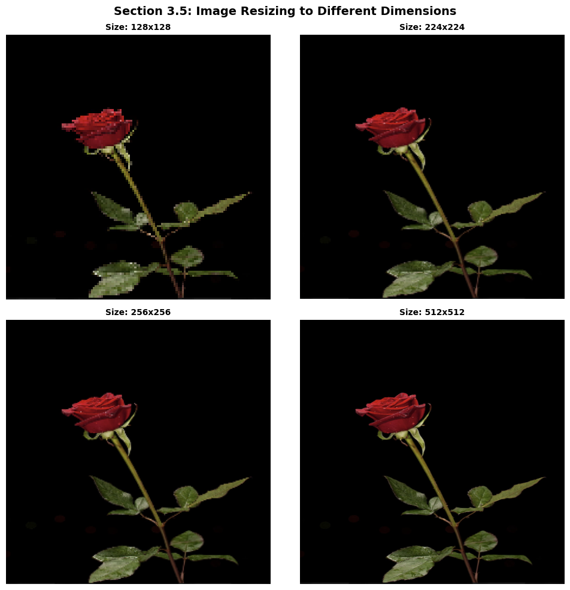
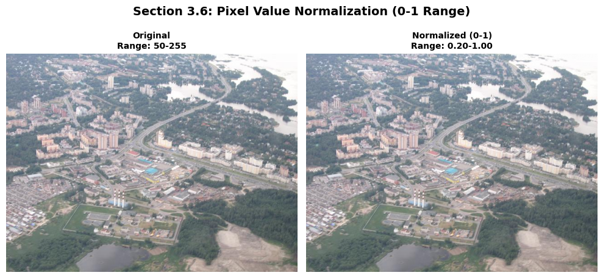
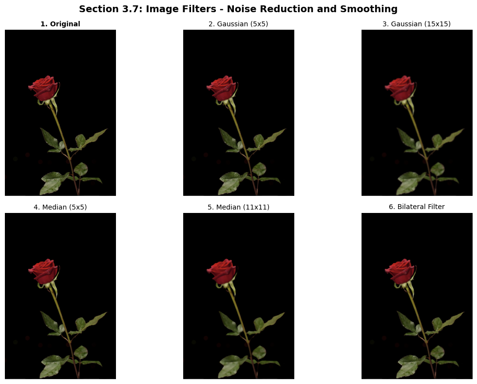
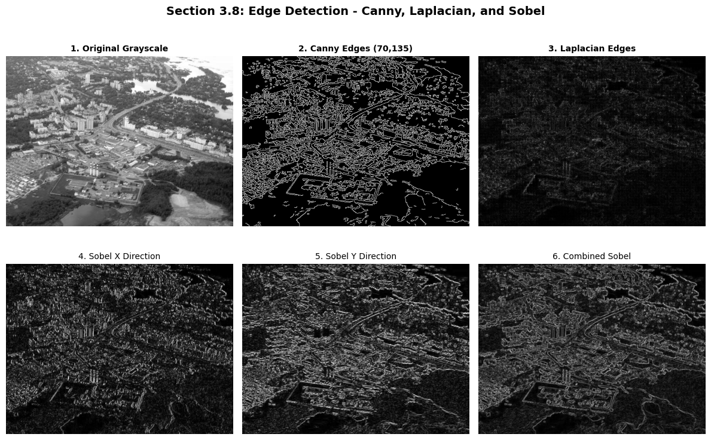
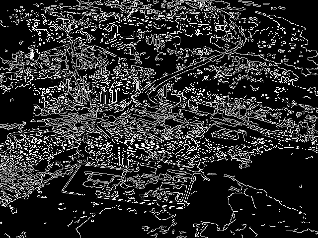
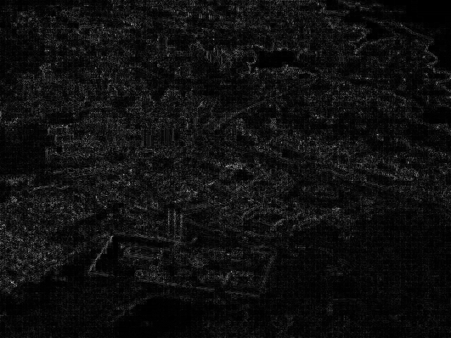
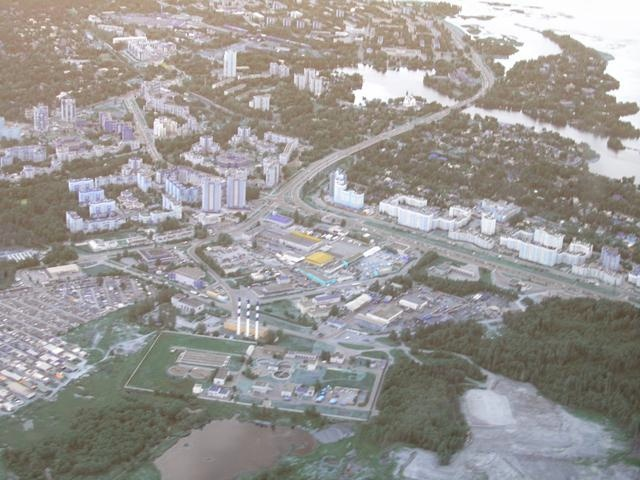

✨ Welcome to my portfolio ✨

I'm Taisoni Ambokile Mwaluswaswa
Geographical Information System and Remote Sensing expert passionate about transforming spatial data into meaningful insights and real-world solutions.
Geographical Information System and Remote Sensing expert passionate about transforming spatial data into meaningful insights and real-world solutions.
Mwendelezo wa taaluma zangu katika Ramani, Picha za Anga, na Teknolojia ya Jiografia
Image loaded using OpenCV. Dimensions: 1180x786 pixels.

Comparison of BGR (OpenCV default), RGB (True Color), and Grayscale conversions.

Image loading using Pillow (direct RGB) and grayscale conversion.

Images resized to standard dimensions: 128x128, 224x224, 256x256, 512x512.

Normalizing pixel values from 0-255 to 0-1 range for better model performance.

Gaussian Blur, Median Blur, and Bilateral Filter for edge-preserving smoothing.

Canny, Laplacian (second derivative), and Sobel X/Y directional edge detection.
Smoothing filter that reduces general image noise using Gaussian function.
Effective filter for removing salt-and-pepper noise while preserving edges.
Advanced filter that smooths images while preserving sharp edges.

Multi-stage algorithm detecting strong and weak edges in the image.

Second derivative method that detects intensity changes.

Aero1 image normalized to 0-1 pixel value range.
Single channel intensity image converted from RGB.
Standard size for CNN models like VGG, ResNet.
import cv2
import numpy as np
from PIL import Image
import matplotlib.pyplot as plt
# 1. LOAD IMAGE
img = cv2.imread('rose.png')
img_rgb = cv2.cvtColor(img, cv2.COLOR_BGR2RGB)
img_gray = cv2.cvtColor(img, cv2.COLOR_BGR2GRAY)
# 2. RESIZING
resized_224 = cv2.resize(img, (224, 224))
# 3. NORMALIZATION
normalized = img_rgb / 255.0
# 4. FILTERS
gaussian = cv2.GaussianBlur(img, (5, 5), 0)
median = cv2.medianBlur(img, 5)
bilateral = cv2.bilateralFilter(img, 9, 75, 75)
# 5. EDGE DETECTION
edges = cv2.Canny(img_gray, 70, 135)
laplacian = cv2.Laplacian(img_gray, cv2.CV_64F)
# Save all images
cv2.imwrite('1_original_rose.png', img)
cv2.imwrite('3_grayscale_rose.png', img_gray)
cv2.imwrite('6_gaussian_blur.png', gaussian)
cv2.imwrite('7_median_blur.png', median)
cv2.imwrite('8_bilateral_filter.png', bilateral)
cv2.imwrite('9_canny_edges.png', edges)
print("✅ All images saved successfully!")
Ward-level population distribution using graduated proportional circles.

Land cover transitions showing conversion to Built-up.

Normalized Difference Vegetation Index showing vegetation health.
.png)
Annual mean LST from MODIS showing urban heat island effect.

Shaded relief showing valley systems and drainage patterns.

Steepness in degrees (0° to 24°).